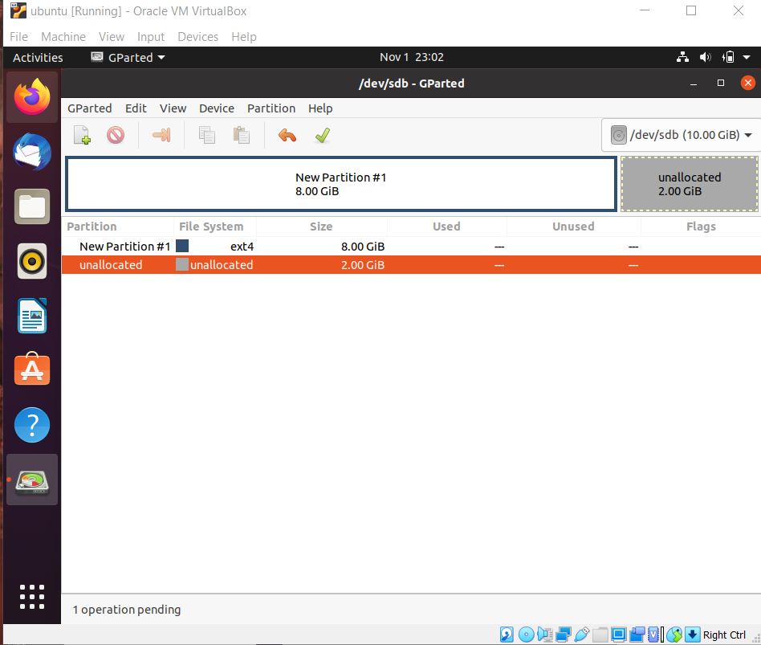

Ubuntu memiliki banyak macam partition table.
- Aix : provides support untuk volume yang digunakan dalam AIX IBM
- Amiga : provides support untuk skema partisi RDB Amiga
- Bsd : provides support untuk label disk BSD
- Dvh : provides support untuk header volume disk SGI
- Gpt : provides support untuk tabel partisi GUID
- Mac : provides support untuk tabel partisi Apple lama (pra-GPT)
- msdos :provides support untuk tabel partisi MBR bergaya DOS
- pc98 : provides support untuk tabel partisi PC-98
- sun : provides support untuk skema partisi Sun
- loop : provides support untuk raw access disk (loopback -style)
Dalam penamaan pada partisi linux seperti sda, hda, fda. Adalah penamaan berdasarkan perangkat
penyimpanannya.
SD adalah drive SCSI, seperti drive tipe SATA dan CD/DVD, HD adalah drive tipe IDE, FD
adalah floppy disk. Untuk huruf belakang pada nama partisi tersebut memiliki arti urutan
perangkatnya, urutannya sesuai dengan huruf abjad.
Dan untuk angkanya memiliki arti berapa banyak partisi yang dimiliki pada perangkat kita.
Langkah-langkah partisi
Untuk partisi pada ubuntu, kita menggunakan software "gparted", jadi langkah pertama adalah kita
install terlebih dahulu softwarenya.
sudo apt-get install gparted
Setelah selesai install, buka software gparted tersebut.
Karena disini kita menggukan disk kosong baru, jadi kita harus membuat partition table untuk disk tersebut
Secara default kita memilik partition table msdos.
Klik kanan pada partisi yang dipilih lalu pilih “resize/move”.
Lalu kita bagi size partisinya sesuai yang kita inginkan.

Proses pembagian partisi selesai.
